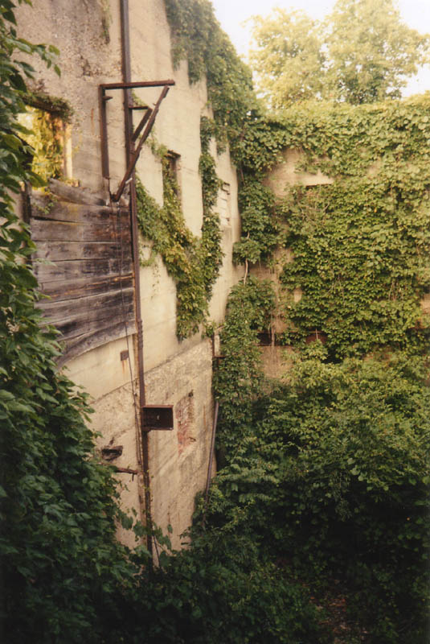
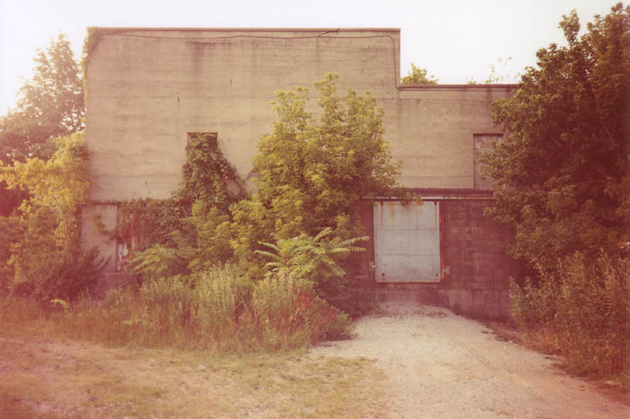
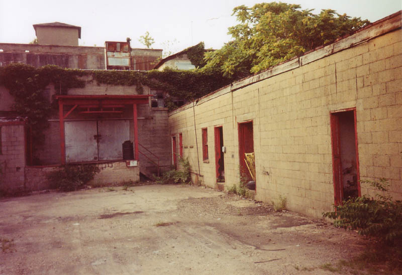
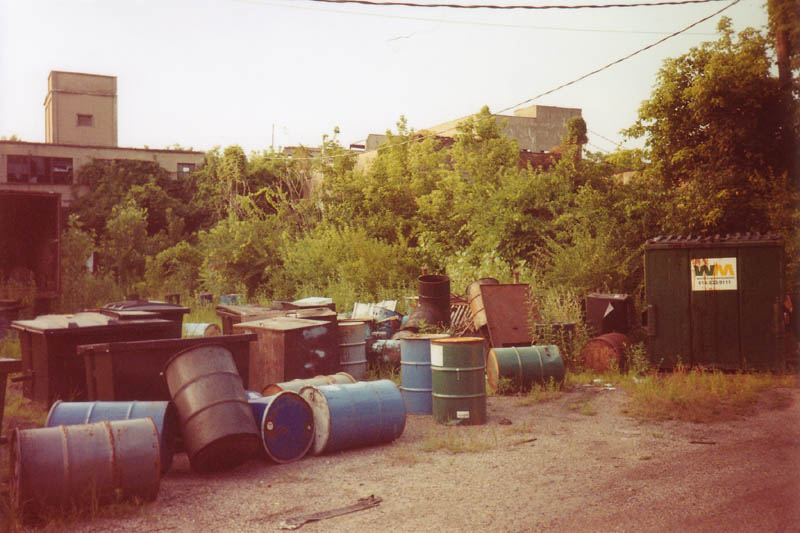
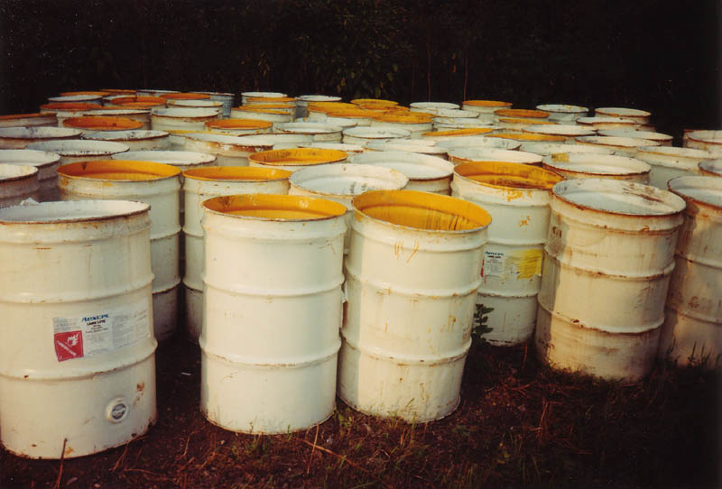
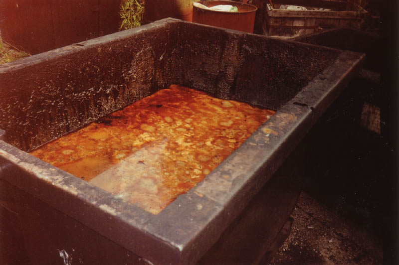

After exploring the upper sections of this ruined building, Rookie and I made our way back through the open loading dock and through heavy foliage, trying to reach the other side. The ground sloped down, and we ended up ducking beneath an elevated portion of the building to cross over.

This side was bordered by a driveway with a chained gate, and had a couple of truck loading docks.

Through another loosely-chained gate is the area where the company still stores some of its worst crap. If you're eating, you might not want to look at a couple of these pictures.

Beside a shiny new panel truck were dozens of open drums of paint in two colors: highway yellow and highway white. The city paints the stripes on the roads with this stuff, which actually smells really good. That's more than I can say for most of the plant.


Now for the really foul stuff. Inside the prison exercise yard part were about two dozen grease dumpsters. If you've ever worked in food service you know what these things are. They're just like regular dumpsters, except they're shorter, watertight, and have a valve near the bottom. You throw your grease in them. Usually they're kept covered. These weren't.

Not only was each dumpster filled to the brim with its own putrid cocktail of nearly solid congealed grease, but many also had a layer of filthy water which was serving as an incubator for mosquitos. The little freshborn mosquitos bobbed around in the water, surrounded by mature ones which buzzed all around.
As you can tell, not the most appetizing place in the world. But still an interesting visit. On a subsequent trip we were almost spotted by a couple of people standing at the main gates on Alum Creek. Remember, kids, people still use this place, so if you want to go for a midnight dip in the grease dumpsters, keep your eyes open.
Back